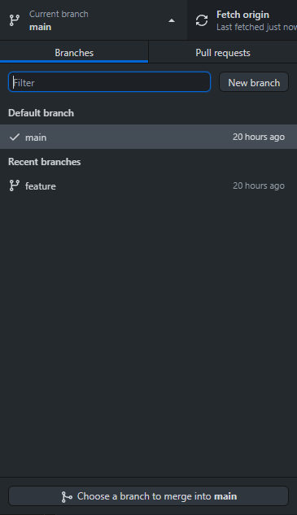
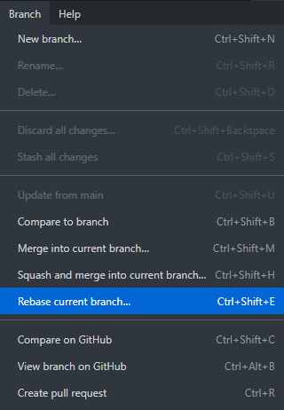

Merging and Rebasing
Both are methods of combining changes from one branch to another.
Merging
The simplest and safest way to combine changes is with the git merge <branch> command. Doing so creates a "merge commit" in the checked out branch that adds the history of the branch taken as a parameter to the checked out branch. Merging is commonly done as it does not modify the involved branches.
The downside, however, is that each time you merge, you gain an additional superfluous commit that can bloat the commit history, especially in very active repositories.
Rebasing
Instead of creating additional commits, the git rebase <branch> command moves the current branches commits onto the end of the given branch. The command re-writes the history of the repository and results in a completely linear path of commits with the rebased commits being the most recent.
While this seems enticing keep the commit history clean, it can be damaging to a collaborative workflow if used incorrectly.
The Golden Rule of Rebasing
Rebasing should never be done into a public branch. This is because new commits are made with the contents of all previous commits so that their order can be changed to being linear, meaning that your version of the public branch has diverged from everyone elses. After this bifurcation, only a merge can combine the two versions of the branch.
GitHub Desktop
Merging is trivial when using Desktop with the help of the button at the bottom of the branch menu.
{kind=link}
The option to rebase is located within the branch label, rather than the previous menu.
{kind=link}